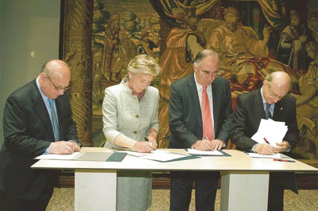

09/05/11 Europe Day celebrated with the participation of the Deputy Secretary General of the Council of Europe

Europe Day was celebrated on 5 May at the headquarters of Ibercaja with an address by Maud de Boer-Buquicchio, Deputy Secretary General of the Council of Europe, who gave a lecture on "Building a Europe of values: the role of the Council of Europe", on the 25th anniversary of the Real Instituto de Estudios Europeos; she also received the Institute's Gold Insignia and Medal. The Secretary of State for Foreign and Ibero-American Affairs, Juan Antonio Yáñez-Barnuevo, also took part in the ceremony.See all the pictures in the multimedia gallery